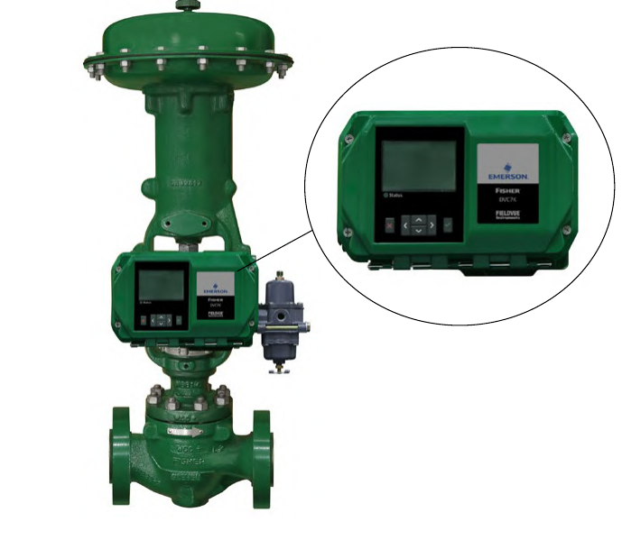

Meet the Digital Valve Controller

1 2- 1Digital valve controller — mounted where a conventional positioner would go, same job: drive the valve to command
- 2Local display and keypad — lets a technician configure, calibrate, and read diagnostics without a separate host system
After Control Valve Handbook, 6th ed., Fig. 4.4 — cropped to the valve; unlabelled overview photo, markers ours. Component Index: cvh-cmp-4.4.